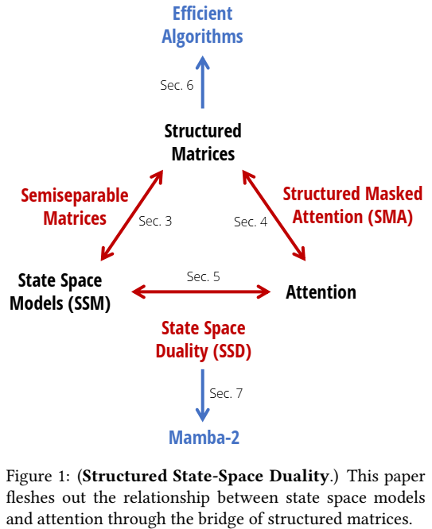

论文阅读三十：Mamba2：Transformers are SSMs
摘要
虽然Transformers已经成为深度学习在语言建模中成功的主要架构，状态空间模型（SSMs），如Mamba，近期被证明在小到中尺寸匹配或超越Transformers。我们证明，这些模型系列实际上是非常紧密相关的，并在SSMs和注意力变体之间开发一个丰富的理论联系框架，通过对一类研究良好的结构化半可分矩阵的各种分解来联系。我们的状态空间对偶性（SSD）框架允许我们设计新的架构（Mamba-2），其核心层是Mamba的选择性SSM的改进，速度快2-8倍，同时继续在语言建模中与Transformers具有可比性。 论文地址
引言
Transformers，尤其是解码模型（如，GPT、Llama）以因果方式来处理输入序列，是当今深度学习成功的主要驱动。大量方法尝试近似核心注意力层来解决其效率问题（Tay等，2022），即训练中序列长度的二次缩放，以及自回归生成阶段序列长度线性大小的缓存需求。同时，一类候选的序列模型，结构化状态空间模型（SSMs）出现，训练期间序列长度线性缩放，生成阶段常量状态大小。它们在长范围任务上展示了强大性能（如，S4），并且最近匹配或超越Transformers在小到中等规模的语言建模任务上（如， Mamba）。然而，SSMs的发展似乎与社区改进Transformers的集体努力脱节，例如从理论上理解它们以及在现代硬件上优化它们。因此，相较于Transformers,SSMs更加难以理解和实验，并且像Transformers那样高效训练SSMs还存在来自算法和系统方面的挑战。
我们的主要目标是在结构化SSM和注意力变体之间建立丰富的理论联系。这将使我们能够将最初为Transformers开发的算法和系统优化转移到SSM，以实现构建性能优于Transformers的基础模型的目标，同时在序列长度上更有效地扩展。在这方面的一个里程碑式的贡献是线性注意力（LA）框架（Katharopoulos等人，2020），该框架通过展示二次核化注意力的“对偶形式”与特定线性递归之间的等价性，得出了自回归注意力与线性RNN之间的联系。这种对偶性允许新的能力，例如同时具有高效的可并行训练和高效的自回归推理的能力。本着同样的精神，本文提供了将线性复杂度SSM与二次复杂度形式联系起来的多个观点，以结合SSM和注意力的优势。
状态空间对偶性。我们的框架，连接结构化SSMs和注意力变体，我们称为结构化状态空间对偶性（SSD），通过结构化矩阵（具有次平方参数和乘法复杂度的矩阵）的抽象来实现。我们开发两种广泛的框架来表示序列模型，一种作为矩阵变化，另一种作为张量收缩，每种揭示对偶性的不同方面。我们的技术贡献包括：
-
我们证明状态空间模型和一类研究成熟的结构化矩阵，称为半可分矩阵（章节3），之间的等价性。这种联系处于我们框架的核心，为SSMs揭示了新的特性和算法。本文的中心信息是：计算状态空间模型的不同方法可以重构为结构化矩阵上的各种矩阵乘法算法。
-
我们显著改进了线性注意力理论（Katharopoulos等，2020）。我们首先通过张量收缩语言提供了其循环形式的有力证明，然后将其泛化到一类新的结构化掩码注意力（SMA）（章节4）。
-
我们连接SSMs和SMA，证明它们有大量交集，即彼此对偶，同时具有类似SSM的线性和类似注意力的二次形式（章节5）。我们还证明了任何具有快速循环形式的核注意方法都必须是SSM。

除了其内在的理论价值，我们的框架为理解和改进序列模型开辟了广泛的方向。
高效算法。 首先最重要的是，我们的框架为计算SSMs提出了新的高效和易于实现的算法（章节6）。我们引入新的SSD算法，基于半可分矩阵的块分解，利用线性SSM循环和平方对偶形式的两种优势，获得所有主要效率坐标（如，训练和推理计算、内存占用、和在当代硬件上利用矩阵乘法单元的能力）上的最优平衡。SSD的专用实现比Mamba的优化的选择性扫描实现快2-8倍，同时允许较大循环状态尺寸（Mamba大小的8倍或更高，几乎没有速度减缓）。SSD与softmax注意力（FlashAttention-2（Dao 2024））的优化实现具有很强的竞争力，在序列长度2K时超过，在序列长16K时速度快6倍。
架构设计。采用SSM等新架构的一个主要障碍是为Transformers量身定制的生态系统，例如用于大规模训练的硬件高效优化和并行技术。我们的框架允许使用既定的惯例和技术来关注SSMs的架构设计选择，并进一步改进它们（第7节）。例如，我们将头部的模拟从多头注意力（MHA）引入SSM。我们证明了Mamba架构是一种多输入SSM（MIS），它类似于多值注意力（MVA），并比较了具有不同头部结构的Mamba的其他变体。
我们还使用这些想法对Mamba块进行了轻微的修改，这允许实现张量并行性（例如，以威震天的风格（Shoeybi等人，2019））。主要思想包括引入分组值注意力（GVA）头部结构，并将所有与数据相关的投影移动到模块块的开头并行发生。
经过修改的并行 Mamba 块与使用 SSD 作为内部 SSM 层相结合，产生了 Mamba-2 架构。我们在与 Mamba 相同的设置中研究了 Mamba-2 的 Chinchilla 缩放定律，发现它在困惑度和挂钟时间方面都优于 Mamba 和 Transformer++。我们还在 Pile 上训练了一系列不同大小的 Mamba-2 模型，表明它在标准下游评估中与 Mamba 和开源 Transformers 相当或优于它们。例如，在 Pile 上用 300B 个 token 训练的具有 2.7B 参数的 Mamba-2 优于用相同数据集训练的 Mamba-2.8B、Pythia-2.8B 甚至 Pythia-6.9B。
系统优化。SSD框架将SSM和Transformers连接起来，使我们能够利用为变Transformers开发的系统优化方面的大量工作（第8节）。
-
例如，Tensor Parallelism（TP）是一种重要的模型并行技术，通过在同一节点上的GPU上分割每一层来训练大型Transformer模型。我们将Mamba-2设计为TP友好型，将每个块的同步点数量减少了一半。
-
对于激活不适合一个设备的非常长的序列，已经为注意力块开发了序列并行性。我们描述了如何通过在设备之间传递循环状态来训练SSM，特别是Mamba-2的序列并行性。
-
为了使用不同长度的示例进行微调，以获得最佳效率，Transformer需要复杂的技术来删除填充标记，并对可变长度序列进行关注。我们展示了如何使用可变序列长度高效地训练Mamba-2，而不需要填充标记。
第9节在语言建模、训练效率和困难的多查询联想回忆任务上实证验证了Mamba-2（Arora，Eyuboglu，Zhang等人，2024）。最后，在第10节中，我们提供了一个扩展的相关工作，并讨论了我们的框架开辟的潜在研究方向。
模型代码和预先训练的检查点在 https://github.com/state-spaces/mamba 。
背景和概述
结构化状态空间模型
结构化空间模型（S4）是最近的一类用于深度学习的序列模型，与RNNs、CNNs和经典状态空间模型广泛相关。它们受特定的连续系统(1)启发，通过隐式潜在状态 映射1维序列 。
结构化SSMs的一般离散化形式采用方程（1）的形式。
其中， 。结构化SSMs之所以如此命名是因为控制时间动态的A矩阵必须是结构化的，为了高效计算这个序列到序列的变换使其足以用于深度神经网络。引入的原始结构是对角线加低阶（DPLR）（Gu、Goel和Ré2022）和对角线（Gu，Gupta等人2022；Gupta，Gu和Berant 2022；J.T.Smith、Warrington和Linderman 2023），这仍然是最受欢迎的结构。
本文章，我们使用术语状态空间模型（SSM）来表示结构化SSMs。这种SSMs有很多种，与连续时间、递归和卷积模型等神经序列模型的几个主要范式有着密切的联系（Gu，Johnson，Goel等人，2021）。我们在下面提供了一个简要的概述，并参考了之前的工作以了解更多的背景和细节（Gu 2023；Gu和Dao 2023）。